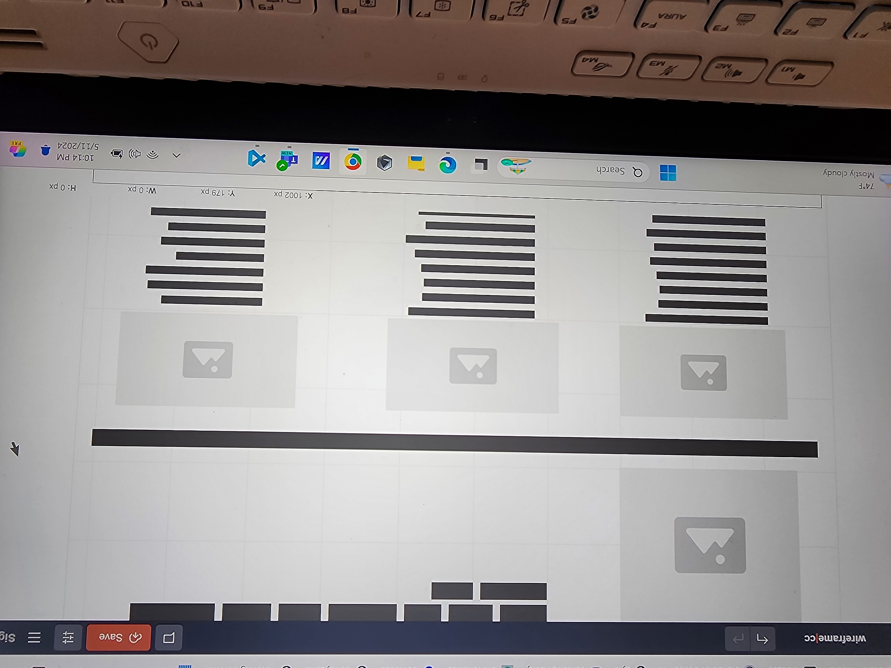

<!DOCTYPE html>
<html lang="en-US"></html>
<head>
    <!--Meta Data-->
    <meta charset="UTF-8">
    <meta name="viewport" content="width=device-width,initial-scale=1.0">
    <title> WDD230 Course Home</title>
    <meta name="description" content="WDD 230 - Web Frontend Development. Yvette Johnson's course assignment portal.">
    <meta name="author" content="Yvette Johnson">
    <!--Open Graph Meta TAgs-->
    <link rel="stylesheet" href="styles/normalize.css">
    <link rel="stylesheet" href="styles/chamber-site-plan-base.css">
    <link rel="stylesheet" href="styles/chamber-site-plan-medium.css">
    <link rel="stylesheet" href="styles/chamber-site-plan-larger.css">
    
</head>
<body>
    <header>
        <h1>Long Johns Chamber of Commerce</h1>
    </header>
    <button id="menu"></button>
    <nav class="navigation">
        <a href="#" class="active">Home</a>
        <a href="#">Advocacy</a>
        <a href="#">Resources</a>
        <a href="#">Events</a>
    </nav>
   
    <main>
        <section class="intro">
            <h2>Introduction</h2>
            
            <p>The reason I chose this name is because the chamber is something that brings individuals together and forms a community.  This name is part of each of the names of some dear friends of ours.</p>
        </section>
        <section>
            <article>
                
                <p>This well balanced color scheme does a great job describing this chamber and community as the blue and green promotes harmony, trustworthliness, and reliability.  Futhermore, these colors are also warm, inviting, and creates a sense of connectioning and belonging among visitors.  The splash of yellow creates energy, vitality and enthusiam. </p>
            </article>
            <article>
                <h3>Typography</h3>
                <h3>Text for header "roboto"</h3>
                <p>Paragraph "source sans 3"</p>
            </article>
            <article>
                <h3>Scenarios</h3>
                <p>What events are available for local business owners?<br>
                    What resources are available for chamber members?<br>
                    How do you become a member and the benefits of it?
                </p>
            </article>
        </section>
    </main>
    <footer>
        <p>Chamber Name | ©2024 </p>
        <!--social media links-->
        <nav class="social links">
            <a href="https://www.facebook.com"></a>
            <a href="https://www.instagram.com"></a>
            <a href="https://www.tiktok.com"></a>
    </footer>
    <script src="scripts/hamburger.js"></script>
</body> 
</html>